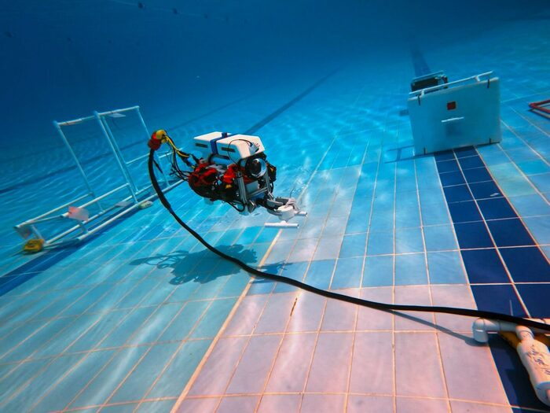

MATE Ranger class
Mosasaurus
The team's flagship ROV, rebuilt for the 2026 season. It carries a 360°-rotating manipulator and 3D-printed task tooling designed against the mission list, and runs a YOLO vision model for identifying invasive species.
- ControlTethered
- Manipulator360° rotating
- VisionYOLO model
- Season2026